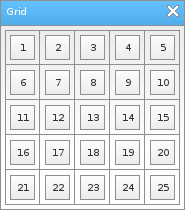

Löve Frames - The Grid Object
Return to Index
Information
-
Example Use
local frame = loveframes.Create("frame")
frame:SetName("Grid")
frame:CenterWithinArea(unpack(demo.centerarea))
local grid = loveframes.Create("grid", frame)
grid:SetPos(5, 30)
grid:SetRows(5)
grid:SetColumns(5)
grid:SetCellWidth(25)
grid:SetCellHeight(25)
grid:SetCellPadding(5)
grid:SetItemAutoSize(true)
local id = 1
for i=1, 5 do
for n=1, 5 do
local button = loveframes.Create("button")
button:SetSize(15, 15)
button:SetText(id)
grid:AddItem(button, i, n)
id = id + 1
end
end
grid.OnSizeChanged = function(object)
frame:SetSize(object:GetWidth() + 10, object:GetHeight() + 35)
frame:CenterWithinArea(unpack(demo.centerarea))
end

Event Callbacks
The grid object has no unique event callbacks.
Methods
AddItem - Adds an item to the object
- Returns 1 value: item [object] or false [boolean] if no item was found
- Returns 1 value: autosize [boolean]
- Returns 1 value: rows [number]
- Returns 1 value: columns [number]
- Returns 1 value: cellwidth [number]
- Returns 1 value: cellheight [number]
- Returns 2 value: cellwidth [number], cellheight [number]
- Returns 1 value: cellpadding [number]
object:AddItem(object[object], row[number], column[number])GetItem - Gets an item from the object at the specified row and column
- Returns 1 value: item [object] or false [boolean] if no item was found
local item = object:GetItem(row[number], column[number])SetItemAutoSize - Sets whether or not the object should auto-size its items
object:SetItemAutoSize(autosize[bool])GetItemAutoSize - Gets whether or not the object should auto-size its items
- Returns 1 value: autosize [boolean]
local autosize = object:GetItemAutoSize()SetRows - Sets the number of rows the object should have
object:SetRows(rows[number])GetRows - Gets the number of rows the object has
- Returns 1 value: rows [number]
local rows = object:GetRows()SetColumns - Sets the number of columns the object should have
object:SetColumns(columns[number])GetColumns - Gets the number of columns the object has
- Returns 1 value: columns [number]
local columns = object:GetColumns()SetCellWidth - Sets the width of the object's cells
object:SetCellWidth(cellwidth[number])GetCellWidth - Gets the width of the object's cells
- Returns 1 value: cellwidth [number]
local cellwidth = object:GetCellWidth()SetCellHeight - Sets the height of the object's cells
object:SetCellHeight(cellheight[number])GetCellHeight - Gets the height of the object's cells
- Returns 1 value: cellheight [number]
local cellheight = object:GetCellHeight()SetCellSize - Sets the size of the object's cells
object:SetCellSize(cellwidth[number], cellheight[number])GetCellSize - Gets the size of the object's cells
- Returns 2 value: cellwidth [number], cellheight [number]
local cellwidth, cellheight = object:GetCellSize()SetCellPadding - Sets the padding of the object's cells
object:SetCellPadding(cellpadding[number])GetCellPadding - Gets the padding of the object's cells
- Returns 1 value: cellpadding [number]
local cellpadding = object:GetCellPadding()